Trail · 桌面 Block × AI 设计参考
16 张桌面状态样稿 · 16:9。默认单层顶栏、pane-local 三层Dock、底部状态栏。示例均为假数据，不能作为产品验收截图。
UX1-01 · D1-R01/R02
保留单层顶栏、底部状态栏与三层Dock；失败Block直接显示AI诊断。点击只准备草稿。

UX1-02 · D1-R03/R04/R05
来源与草稿可编辑；准备阶段没有推理或执行。当前会话与任务目标没有变化。

UX1-03 · D1-R06/R07/R08
完整目标和命令、固定操作；摘要不直接批准；编辑/切pane需校验原revision。

UX1-04 · D1-R05/R09/R10
右区是显式打开的只读观察，不是第二PTY；复制可用，键鼠报告不写入。

UX2-01 · D2-R01/R04/R05
候选、详情与主动作同步；不因鼠标hover改变滚动位置；Tab只授权当前查询。
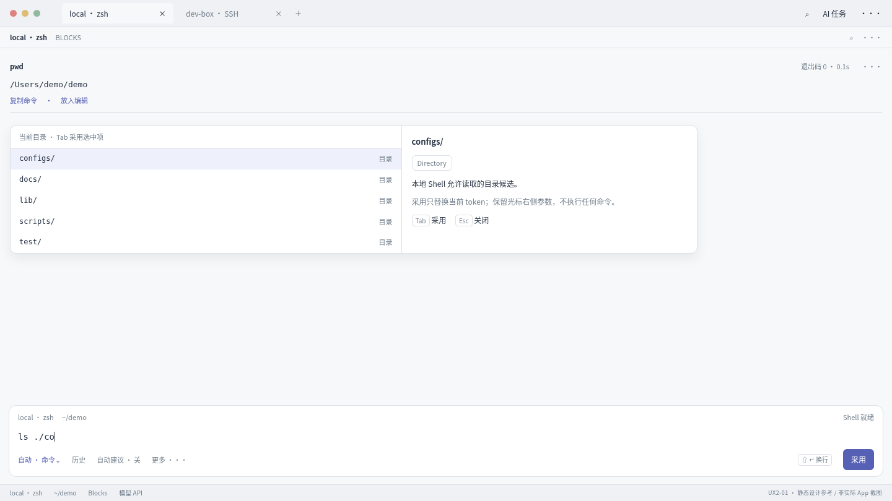
UX2-02 · D2-R10/R11/R12
A运行、B待审、C写稿、D交互；B的回复/审批不得抢C焦点，选中pane不重定向任务。
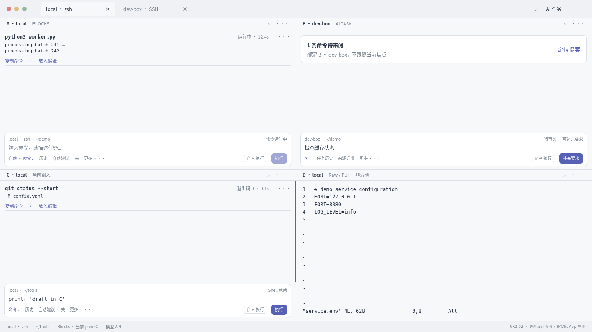
UX2-03 · D2-R09/R15
按需检查器可关闭；来源/行范围清楚；过滤显示不改原始数据，阅读不改写目标。
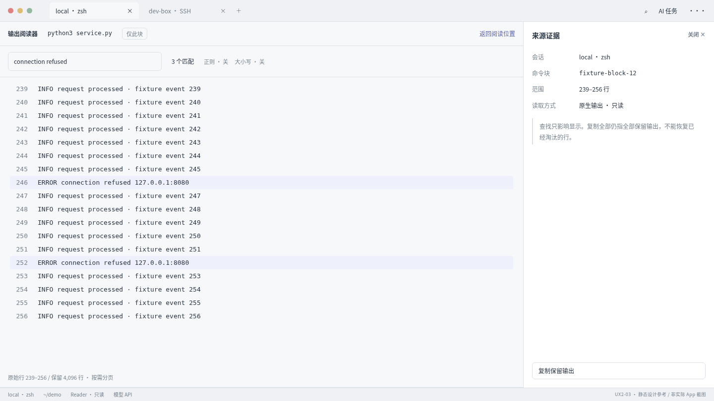
UX2-04 · D2-R01/R03/R05
历史取消恢复原稿和selection；最近命令靠近Dock。真实IME需实施阶段系统截图，不以此静态稿证明。
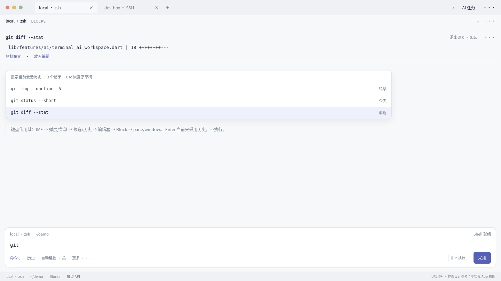
UX3-01 · D3-R01/R02/R03/R04
安静表面、轻分隔、清楚状态，延续已有Dock方向；主色只是例稿主题。
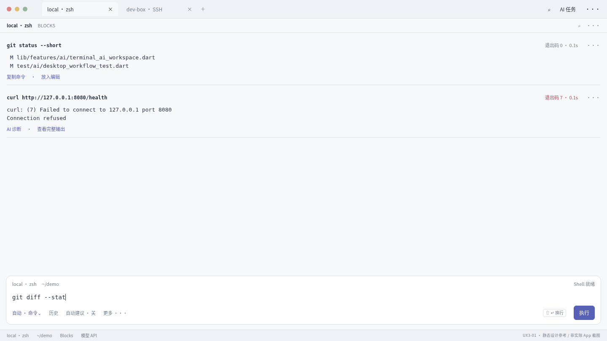
UX3-02 · D3-R01/R02/R03/R04
与浅色同内容的深色映射；终端ANSI与UI状态分离，不通过滤镜生成正式验收图。
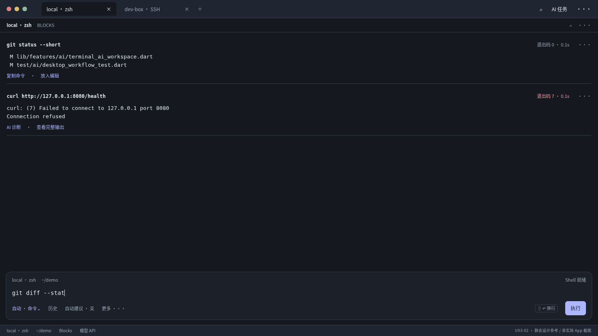
UX3-03 · D3-R06/R09/R16
这是设计状态总览，不要求产品增加测试中心；每状态的文案与合法动作必须落实。
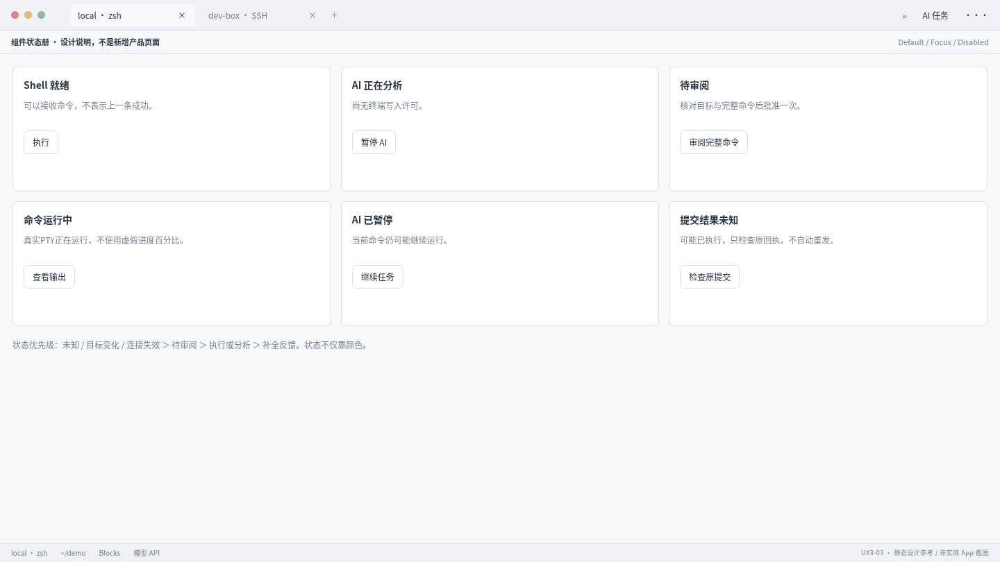
UX3-04 · D3-R07/R08/R14
缩放时优先减少低频信息与折行/详情，不隐藏主动作或缩小字号；稿展示布局方向，实际1/1.5/2须原生验证。
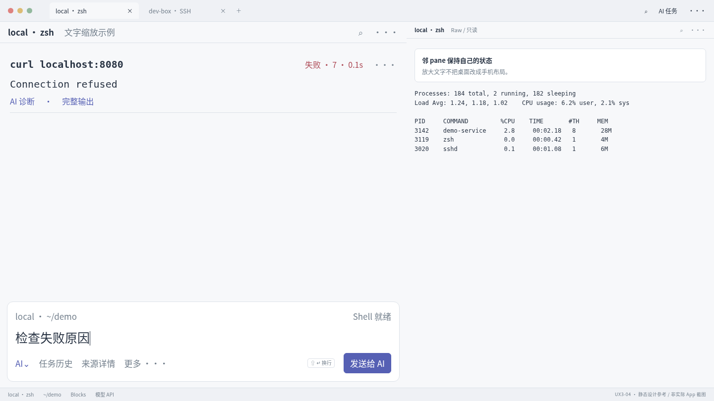
UX4-01 · D4-R06/R10
高优先未知提示持续；禁止重复执行；保留operation身份供真实日志校验。
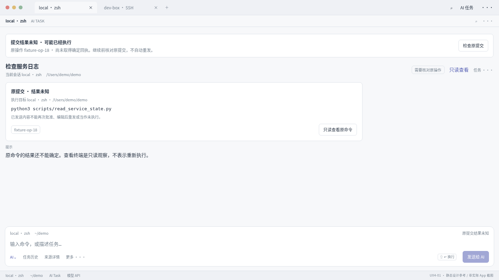
UX4-02 · D4-R03/R04/R05
双后端独立验收；示例路径不可硬编码。Finder检测、测试与保存均不等于任务执行。
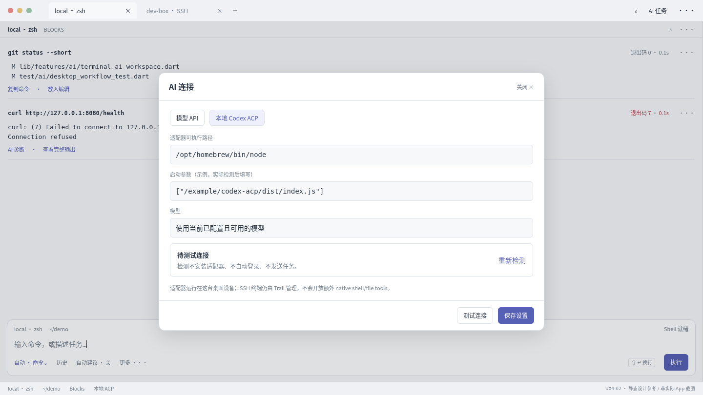
UX4-03 · D4-R06/R10/R14
恢复与授权分离，原/当前目标明确；无法证实就保持未知，不复活死PTY。
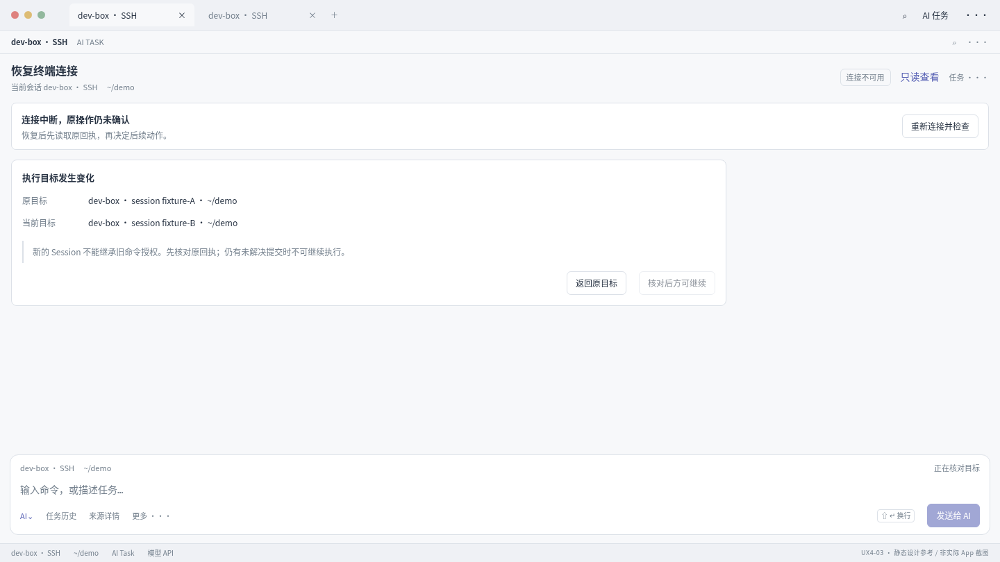
UX4-04 · D4-R07/R08/R09
这是必须在实际App中重现的验收目标；接管不发Ctrl+C，退出后只提供手动返回Blocks。
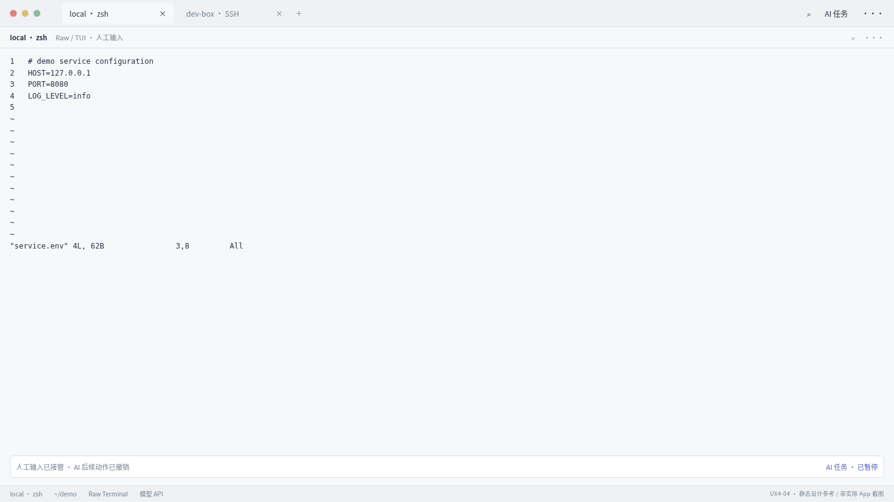